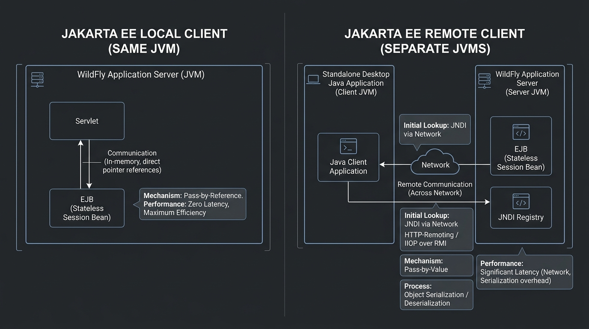

<title>Session 6 — Jakarta Local and Remote Clients</title>
<meta name="viewport" content="width=device-width, initial-scale=1">
<meta name="description" content="Session 6: Jakarta Local vs. Remote Clients, pass-by-reference vs. pass-by-value, serialization, standalone client JNDI lookup, and session object identity.">
<link rel="stylesheet" href="assets/css/styles.css">
<script>window.PAGE = "s06";</script>

<main class="page">

  <h1>Session 6 · Jakarta Local and Remote Clients</h1>
  <p class="lede">Whatever calls an enterprise bean is its <strong>client</strong>. If the caller lives in the
    <strong>same JVM</strong> as the bean, it is a <strong>Local Client</strong>. If it lives on a separate
    server, desktop application, or microservice, it is a <strong>Remote Client</strong>. The choice fundamentally
    governs parameter semantics, network latency, and interface design.</p>

  <div class="callout callout--key"><span class="callout__i">🎯</span>
    <div class="callout__b"><b>Learning Objectives (from the Presenter's Manual)</b>
      <ol style="margin:.6rem 0 0;padding-left:1.2rem">
        <li>Define Jakarta Local Clients and Remote Clients</li>
        <li>Explain when to use a Local Client vs. a Remote Client (pass-by-reference vs. pass-by-value)</li>
        <li>Apply architecture decision criteria (coupling, latency, network boundaries)</li>
        <li>Trace the client view of a session object's lifecycle</li>
        <li>Describe session object identity (anonymity) vs. Entity identity (primary key) and Handle serialization</li>
        <li>Configure and invoke both <code>@Local</code> and <code>@Remote</code> beans via WildFly and JNDI</li>
      </ol>
    </div>
  </div>

  <!-- =====================================================================
       6.1 Overview of Local vs Remote Clients
       ===================================================================== -->
  <span class="eyebrow">session 6.1</span>
  <h2>Part 1 · The Two Client Paradigms Side by Side</h2>

  <figure>
    
    <figcaption><b>Memory vs. Network:</b> Local calls execute inside RAM in nanoseconds; Remote calls serialize parameters and traverse Ethernet in milliseconds.</figcaption>
  </figure>

  <div class="tablewrap"><table>
    <thead><tr><th>Feature</th><th>Local Client</th><th>Remote Client</th></tr></thead>
    <tbody>
      <tr>
        <td><strong>Runtime Environment</strong></td>
        <td>Must run in the <strong>same JVM</strong> (e.g., Servlet in same EAR/WAR)</td>
        <td>Runs in a <strong>separate JVM</strong>, external container, or standalone machine</td>
      </tr>
      <tr>
        <td><strong>Parameter Passing</strong></td>
        <td><strong>Pass-by-Reference</strong> (Direct pointer in RAM)</td>
        <td><strong>Pass-by-Value</strong> (Serialized binary copy sent over network)</td>
      </tr>
      <tr>
        <td><strong>Execution Latency</strong></td>
        <td><strong>Nanoseconds</strong> (zero marshaling overhead)</td>
        <td><strong>Milliseconds</strong> (network handshake, serialization, socket I/O)</td>
      </tr>
      <tr>
        <td><strong>Interface Requirement</strong></td>
        <td><code>@Local</code> interface OR <strong>No-Interface View</strong></td>
        <td><strong>Must declare an explicit <code>@Remote</code> interface</strong></td>
      </tr>
      <tr>
        <td><strong>Object Argument Rules</strong></td>
        <td>Any standard Java class</td>
        <td>All arguments/returns must implement <code>java.io.Serializable</code></td>
      </tr>
      <tr>
        <td><strong>Mutations to Arguments</strong></td>
        <td>Mutations made by the bean affect the caller's object directly</td>
        <td>Mutations affect only the bean's deserialized copy; caller sees no change</td>
      </tr>
    </tbody>
  </table></div>

  <div class="callout callout--key"><span class="callout__i">⚡</span>
    <div class="callout__b"><b>Performance Rule of Thumb</b>
      Beans that communicate frequently (e.g., an <code>OrderBean</code> calling a <code>TaxBean</code> thousands
      of times per minute) should <strong>always use Local interfaces</strong>. Remote overhead will degrade system throughput.
      Reserve <code>@Remote</code> strictly for distinct systems and external integrations.
    </div>
  </div>

  <!-- =====================================================================
       6.2 Jakarta Local Clients
       ===================================================================== -->
  <span class="eyebrow">session 6.2</span>
  <h2>Part 2 · Developing Local Clients</h2>

  <p>A local bean can be exposed in three standard ways:</p>
  <ol>
    <li><strong>No-Interface View:</strong> A bean without any interface automatically exposes all public methods as a local view.</li>
    <li><strong>Explicit <code>@Local</code> on Interface:</strong> An interface marked with <code>@Local</code>.</li>
    <li><strong>Class-level declaration:</strong> <code>@Stateless @Local(ServiceLocal.class)</code>.</li>
  </ol>

  <h3>Working Local Example: Prime Number Generator</h3>

  <div class="code-head">1. PrimeCalculatorLocal.java — Local Interface</div>
  <pre><code>package com.demo.local;

import jakarta.ejb.Local;

@Local
public interface PrimeCalculatorLocal {
    String getPrimesUpTo(int limit);
}</code></pre>

  <div class="code-head">2. PrimeCalculatorBean.java — Stateless Bean</div>
  <pre><code>package com.demo.local;

import jakarta.ejb.Stateless;

@Stateless
public class PrimeCalculatorBean implements PrimeCalculatorLocal {

    @Override
    public String getPrimesUpTo(int limit) {
        StringBuilder sb = new StringBuilder();
        for (int i = 2; i &lt;= limit; i++) {
            int count = 0;
            for (int n = i; n &gt;= 1; n--) {
                if (i % n == 0) count++;
            }
            if (count == 2) sb.append(i).append(" ");
        }
        return sb.toString().trim();
    }
}</code></pre>

  <div class="code-head">3. PrimeClientServlet.java — Co-located Web Client</div>
  <pre><code>package com.demo.local;

import jakarta.ejb.EJB;
import jakarta.servlet.annotation.WebServlet;
import jakarta.servlet.http.HttpServlet;
import jakarta.servlet.http.HttpServletRequest;
import jakarta.servlet.http.HttpServletResponse;
import java.io.IOException;

@WebServlet("/primes")
public class PrimeClientServlet extends HttpServlet {

    // Co-located inside the same EAR/WAR -> Injected directly with @EJB
    @EJB
    private PrimeCalculatorLocal primeCalculator;

    @Override
    protected void doGet(HttpServletRequest req, HttpServletResponse resp) throws IOException {
        String primes = primeCalculator.getPrimesUpTo(100);
        resp.setContentType("text/plain");
        resp.getWriter().println("Primes up to 100: " + primes);
    }
}</code></pre>

  <!-- =====================================================================
       6.3 Jakarta Remote Clients
       ===================================================================== -->
  <span class="eyebrow">session 6.3</span>
  <h2>Part 3 · Developing Standalone Remote Clients</h2>

  <p>Remote clients operate outside WildFly. They connect using JBoss Remoting or HTTP-remoting over port <code>8080</code>
    and use JNDI properties to locate the remote stub:</p>

  <div class="code-head">1. StringReverseRemote.java — Remote Interface</div>
  <pre><code>package com.demo.remote;

import jakarta.ejb.Remote;

@Remote
public interface StringReverseRemote {
    String reverseString(String input);
}</code></pre>

  <div class="code-head">2. StringReverseBean.java — Remote Stateless Bean</div>
  <pre><code>package com.demo.remote;

import jakarta.ejb.Stateless;

@Stateless
public class StringReverseBean implements StringReverseRemote {

    @Override
    public String reverseString(String input) {
        if (input == null) return null;
        return new StringBuilder(input).reverse().toString();
    }
}</code></pre>

  <div class="code-head">3. RemoteClientMain.java — Standalone Java SE Client</div>
  <pre><code>package com.demo.remote.client;

import com.demo.remote.StringReverseRemote;
import javax.naming.Context;
import javax.naming.InitialContext;
import javax.naming.NamingException;
import java.util.Properties;

public class RemoteClientMain {

    public static void main(String[] args) {
        try {
            // Configure WildFly EJB Remoting JNDI provider
            Properties p = new Properties();
            p.put(Context.INITIAL_CONTEXT_FACTORY,
                  "org.wildfly.naming.client.WildFlyInitialContextFactory");
            p.put(Context.PROVIDER_URL, "remote+http://localhost:8080");

            Context ctx = new InitialContext(p);

            // JNDI Lookup syntax for WildFly Remote EJBs:
            // ejb:<appName>/<moduleName>/<distinctName>/<beanName>!<interfaceName>
            String jndiName = "ejb:/RemoteLab/StringReverseBean!com.demo.remote.StringReverseRemote";
            StringReverseRemote service = (StringReverseRemote) ctx.lookup(jndiName);

            // Call method across network socket
            String original = "Enterprise Jakarta Beans";
            String reversed = service.reverseString(original);

            System.out.println("Original: " + original);
            System.out.println("Reversed from WildFly: " + reversed);

        } catch (NamingException e) {
            System.err.println("Remote JNDI lookup failed: " + e.getMessage());
        }
    }
}</code></pre>

  <!-- =====================================================================
       6.4 Session Object Identity & Handles
       ===================================================================== -->
  <span class="eyebrow">session 6.4 &amp; 6.5</span>
  <h2>Part 4 · Session Object Identity vs. Entity Identity</h2>

  <div class="tablewrap"><table>
    <thead><tr><th>Aspect</th><th>Session Bean (Stateless / Stateful)</th><th>Entity Bean / JPA Entity</th></tr></thead>
    <tbody>
      <tr>
        <td><strong>Identity Visibility</strong></td>
        <td><strong>Anonymous / Hidden</strong></td>
        <td><strong>Exposed Primary Key</strong> (<code>@Id</code>)</td>
      </tr>
      <tr>
        <td><strong>Primary Key Method</strong></td>
        <td>Calling <code>getPrimaryKey()</code> throws <code>RemoteException</code></td>
        <td>Exposes primary key type (e.g., <code>getId()</code> returns <code>Long</code>)</td>
      </tr>
      <tr>
        <td><strong>Finder Methods</strong></td>
        <td>None (cannot query or "search" for a session bean)</td>
        <td>Extensive finders: <code>em.find()</code>, JPQL queries</td>
      </tr>
      <tr>
        <td><strong>Long-term Reference</strong></td>
        <td>Clients use <code>sessionBean.getHandle()</code></td>
        <td>Clients store the database primary key ID</td>
      </tr>
    </tbody>
  </table></div>

  <details class="deep-dive">
    <summary>Deep Dive: What is a Session Bean Handle?</summary>
    <p>A <strong>Handle</strong> is a serializable token (obtained via <code>bean.getHandle()</code>) that allows a client to save a reference to an active session bean to disk or message queue. Later, calling <code>handle.getEJBObject()</code> restores the live proxy connection to the server.</p>
  </details>

  <!-- Interactive Simulation Bench -->
  <div class="bench" data-run="canned">
    <div class="bench__head">
      <span class="dot"></span>
      <span class="kind">interactive simulation</span>
      <span class="mode">Remote Client RMI Invocation Replay</span>
    </div>
    <pre class="bench__code"><code>// Standalone Java client invokes StringReverseBean over HTTP-Remoting
Properties props = new Properties();
props.put(Context.PROVIDER_URL, "remote+http://localhost:8080");
InitialContext ctx = new InitialContext(props);
StringReverseRemote stub = (StringReverseRemote) ctx.lookup("ejb:/RemoteLab/StringReverseBean!...");
String result = stub.reverseString("Enterprise Jakarta Beans");</code></pre>
    <div class="bench__controls">
      <button class="btn-run" type="button">Execute Remote Call</button>
      <span class="bench__hint">Traces socket connection establishment, parameter serialization, and remote execution.</span>
    </div>
    <script type="text/plain" class="bench__canned">
[07:49:12,010] [Client JVM] Connecting to WildFly remoting endpoint at http://localhost:8080/ejb...
[07:49:12,034] [Client JVM] Handshake OK. Authentication negotiated as anonymous client.
[07:49:12,042] [Client JNDI] Resolved stub for StringReverseBean. Generating dynamic proxy.
[07:49:12,048] [RMI Marshaler] Serializing argument: java.lang.String ("Enterprise Jakarta Beans") -> 48 bytes payload.
[07:49:12,055] [WildFly Server] Worker thread dispatched. StringReverseBean.reverseString() invoked.
[07:49:12,058] [WildFly Server] Returned: "snaeb atrakaJ esirpretnE". Serializing return value.
[07:49:12,069] [Client JVM] Deserialized result. Received: "snaeb atrakaJ esirpretnE" in 59ms roundtrip.
    </script>
    <pre class="bench__out" aria-live="polite"></pre>
  </div>

  <!-- =====================================================================
       Knowledge Check Quiz
       ===================================================================== -->
  <span class="eyebrow">check yourself</span>
  <section class="quiz" data-quiz>
    <h3>Session 6 · Knowledge Check</h3>
    <script type="application/json">
    [
      {
        "q": "Which Java technology allows applications running in different JVMs to communicate with one another?",
        "opts": [
          "Burlap",
          "RMI (Remote Method Invocation)",
          "JAXB",
          "JDBC"
        ],
        "a": 1,
        "why": "RMI is the core Java standard that enables objects in one JVM to invoke methods on objects running in another JVM."
      },
      {
        "q": "How are parameters passed between a Local Client and a Local EJB in the same JVM?",
        "opts": [
          "Pass-by-value (serialized byte copy)",
          "Pass-by-reference (direct pointer in memory)",
          "Via JSON string conversion",
          "Through a temporary database table"
        ],
        "a": 1,
        "why": "Local clients share the exact same JVM memory heap, allowing pass-by-reference execution with zero network marshaling."
      },
      {
        "q": "Can a Remote EJB expose a No-Interface View?",
        "opts": [
          "Yes, all modern EJBs can",
          "No, remote clients strictly require an explicit @Remote business interface",
          "Only if the bean is a Singleton",
          "Only in development mode"
        ],
        "a": 1,
        "why": "The No-Interface View is exclusively available to local clients. Remote clients mandate a defined @Remote interface."
      },
      {
        "q": "What happens if a client attempts to call getPrimaryKey() on a Session Bean?",
        "opts": [
          "It returns the database row ID",
          "It returns null",
          "It throws an exception because Session Beans are anonymous and have no primary key",
          "It renames the bean"
        ],
        "a": 2,
        "why": "Session beans are anonymous units of business logic; only Entity beans and JPA entities have primary keys."
      },
      {
        "q": "What interface must all custom objects implement to be passed as arguments to a Remote EJB?",
        "opts": [
          "java.lang.Cloneable",
          "java.io.Serializable",
          "jakarta.ejb.EJBObject",
          "java.lang.Comparable"
        ],
        "a": 1,
        "why": "Remote parameter passing uses serialization (pass-by-value), requiring all transmitted objects to implement java.io.Serializable."
      }
    ]
    </script>
  </section>

  <!-- =====================================================================
       Summary
       ===================================================================== -->
  <span class="eyebrow">recap</span>
  <h2>One-Line Summary</h2>
  <div class="tablewrap summary"><table><tbody>
    <tr><td><strong>Local Client</strong></td><td>Co-located in same JVM; pass-by-reference in RAM; uses <code>@Local</code> or No-Interface.</td></tr>
    <tr><td><strong>Remote Client</strong></td><td>Distributed across JVMs; pass-by-value over network; requires <code>@Remote</code> + <code>Serializable</code>.</td></tr>
    <tr><td><strong>Latency Gap</strong></td><td>Local = nanoseconds; Remote = milliseconds (marshaling + network roundtrip).</td></tr>
    <tr><td><strong>Session Identity</strong></td><td>Anonymous; <code>getPrimaryKey()</code> throws exception; persistent handles available via <code>getHandle()</code>.</td></tr>
    <tr><td><strong>Standalone Client</strong></td><td>Configures <code>WildFlyInitialContextFactory</code> to look up remote EJB proxy via JNDI.</td></tr>
  </tbody></table></div>

</main>

<script src="assets/js/course.js"></script>
<script src="assets/js/runner.js"></script>
